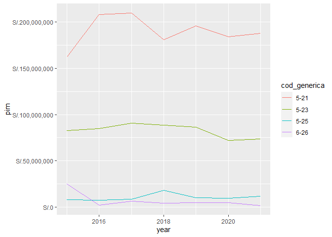

El objetivo de perutranspaeconomica es contar con una manera de obtener datos del Portal de Transparencia Económica Perú desde R, con una interfaz de programación consistente y clara.
Code of Conduct
Please note that the perutranspaeconomica project is released with a Contributor Code of Conduct. By contributing to this project, you agree to abide by its terms.
Instalación
Puedes instalar el paquete desde mi R-universe:
# Habilita el repositorio calderonsamuel
options(repos = c(
calderonsamuel = 'https://calderonsamuel.r-universe.dev',
CRAN = 'https://cloud.r-project.org'))
# Descargar e instalar perutranspaeconomica en R
install.packages('perutranspaeconomica')También puedes instalar la versión en desarrollo de perutranspaeconomica desde GitHub con:
# install.packages("remotes")
remotes::install_github("calderonsamuel/perutranspaeconomica")Ejemplo
Con este paquete puedes realizar consultas del Portal de Transparencia Económica del MEF-Perú, específicamente en el módulo de gasto de seguimiento a la ejecución presupuestal.
El paquete propone un flujo de trabajo de 1) iniciar consulta, 2) elegir parámetros, y 3) ejecutar consulta. Para ello, se ha creado la clase ‘sep_df’ para consolidar una infraestructura interna consistente. EL usuario común no va a necesitar interactuar con esa infraestructura directamente ya que se han agregado funciones de soporte que habilitan una interfaz de programación más amigable.
Empezamos por cargar el paquete:
Iniciar consulta
Para iniciar una consulta tan solo hace falta usar la función sep(). Esto crea un dataframe vacío y muestra los parámetros de consulta agregados. Al inicio no tenemos parámetros ni data.
sep()
#>
#> ── Seguimiento a la ejecucion presupuestal (actualizacion diaria) ──────────────
#>
#> ── Parametros de consulta ──
#>
#> ℹ No se ha definido parametros de consulta
#>
#> ── Data ──
#>
#> ℹ No se ha ejecutado ninguna consultaElegir parámetros de consulta
La elección de parámetros de consulta se hace con las funciones que choose_*(). Por ejemplo, para consultas en el módulo de gasto presupuestal, se pueden utilizar las siguientes:
choose_years()choose_quien_gasta()choose_en_que_se_gasta()choose_como_se_estructura()choose_cuando_se_hizo_gasto()choose_donde_se_gasta()
De todas ellas, la mínima requerida es choose_years().
Una vez que se le agrega parámetros a la consulta, la interfaz lo refleja. choose_years() utiliza por defecto el año en curso
sep() |>
choose_years()
#>
#> ── Seguimiento a la ejecucion presupuestal (actualizacion diaria) ──────────────
#>
#> ── Parametros de consulta ──
#>
#> • Periodo anual:
#> • 2022
#>
#> ── Data ──
#>
#> ℹ No se ha ejecutado ninguna consultaCada argumento de las funciones choose_*() puede aceptar vectores con más de un elemento para una consulta más potente.
sep() |>
choose_years(years = 2020:2022)
#>
#> ── Seguimiento a la ejecucion presupuestal (actualizacion diaria) ──────────────
#>
#> ── Parametros de consulta ──
#>
#> • Periodo anual:
#> • 2020, 2021 y 2022
#>
#> ── Data ──
#>
#> ℹ No se ha ejecutado ninguna consultaSin embargo, en el resto de parámetros, es necesario que al menos un argumento esté definido como "todos". Más adelante se verá que en caso contrario la consulta no prosperará.
# malo. dos argumentos definidos como "todos"
sep() |>
choose_years() |>
choose_quien_gasta(nivel = "todos") |>
choose_donde_se_gasta(departamento_meta = "todos")
# bueno. solo un argumento definido como "todos"
sep() |>
choose_years() |>
choose_quien_gasta(nivel = "E") |>
choose_donde_se_gasta(departamento_meta = "todos")
#>
#> ── Seguimiento a la ejecucion presupuestal (actualizacion diaria) ──────────────
#>
#> ── Parametros de consulta ──
#>
#> • Periodo anual:
#> • 2022
#> • Quien gasta:
#> • Nivel de gobierno: E
#> • Donde se gasta:
#> • Departamento (meta): todos
#>
#> ── Data ──
#>
#> ℹ No se ha ejecutado ninguna consultaTodos los métodos choose_*() cuentan con documentación referente a cómo deben ser definidos. Para mayor detalle consultar el método específico. Por ejemplo, help("choose_quien_gasta") o ?choose_quien_gasta.
Consultar
Una vez definidos los parámetros de la consulta, solo hace falta ejecutarla. Para ello, usamos la función consultar(). Esto nos devolverá la interfaz de consulta, pero ahora contendrá la data requerida.
# ¿Cómo va la ejecución presupuestal por departamento en el gobierno nacional?
sep() |>
choose_years() |>
choose_quien_gasta(nivel = "E") |>
choose_donde_se_gasta(departamento_meta = "todos") |>
consultar()
#>
#> ── Seguimiento a la ejecucion presupuestal (actualizacion diaria) ──────────────
#>
#> ── Parametros de consulta ──
#>
#> • Periodo anual:
#> • 2022
#> • Quien gasta:
#> • Nivel de gobierno: E
#> • Donde se gasta:
#> • Departamento (meta): todos
#>
#> ── Data ──
#>
#> # A tibble: 26 × 11
#> year cod_departamento_meta desc_departamento_me… pia pim certificacion
#> <int> <chr> <chr> <dbl> <dbl> <dbl>
#> 1 2022 01 AMAZONAS 1.03e9 1.07e9 884461176
#> 2 2022 02 ANCASH 3.37e9 3.26e9 2615743947
#> 3 2022 03 APURIMAC 9.13e8 1.09e9 942827167
#> 4 2022 04 AREQUIPA 2.19e9 2.25e9 1909744614
#> 5 2022 05 AYACUCHO 1.14e9 1.29e9 1134941063
#> 6 2022 06 CAJAMARCA 2.03e9 2.31e9 1976494630
#> 7 2022 07 PROVINCIA CONSTITUCI… 2.72e9 3.05e9 2876702415
#> 8 2022 08 CUSCO 3.20e9 3.34e9 2902237770
#> 9 2022 09 HUANCAVELICA 1.06e9 1.01e9 848055170
#> 10 2022 10 HUANUCO 1.64e9 1.67e9 1443358550
#> # … with 16 more rows, and 5 more variables: compromiso_anual <dbl>,
#> # atencion_de_compromiso_mensual <dbl>, devengado <dbl>, girado <dbl>,
#> # avance_percent <dbl>Se recomienda asignarle nombre a una consulta ejecutada para evitar posibles tediosas re-descargas, especialmente cuando la consulta usa parámetros con vectores más grandes.
# ¿Cómo se ejecutó el gasto por genérica para el PP 0031 entre el 2015 y 2021?
mi_consulta <- sep() |>
choose_years(2015:2021) |>
choose_en_que_se_gasta(categoria_presupuestal = "0031") |>
choose_como_se_estructura(generica = "todos") |>
consultar()
mi_consulta
#> ── Seguimiento a la ejecucion presupuestal (actualizacion diaria) ──────────────
#>
#> ── Parametros de consulta ──
#>
#> • Periodo anual:
#> • 2015, 2016, 2017, 2018, 2019, 2020 y 2021
#> • En que se gasta:
#> • Categoria presupuestal: 0031
#> • Como se estructura gasto:
#> • Generica: todos
#>
#> ── Data ──
#>
#> # A tibble: 28 × 11
#> year cod_generica desc_generica pia pim certificacion compromiso_anual
#> <int> <chr> <chr> <dbl> <dbl> <dbl> <dbl>
#> 1 2015 5-21 PERSONAL Y O… 1.62e8 1.62e8 161903968 161903968
#> 2 2015 5-23 BIENES Y SER… 1.04e8 8.25e7 78873581 77855263
#> 3 2015 5-25 OTROS GASTOS 7 e6 7.93e6 7929712 7927213
#> 4 2015 6-26 ADQUISICION … 2.61e7 2.51e7 22911882 22856652
#> 5 2016 5-21 PERSONAL Y O… 2.08e8 2.08e8 208113793 208113793
#> 6 2016 5-23 BIENES Y SER… 8.00e7 8.47e7 84200881 82404677
#> 7 2016 5-25 OTROS GASTOS 7 e6 7.45e6 7448352 7214068
#> 8 2016 6-26 ADQUISICION … 0 2.15e6 2146782 1319582
#> 9 2017 5-21 PERSONAL Y O… 2.09e8 2.09e8 209308943 209308943
#> 10 2017 5-23 BIENES Y SER… 8.42e7 9.08e7 88905681 87661656
#> # … with 18 more rows, and 4 more variables:
#> # atencion_de_compromiso_mensual <dbl>, devengado <dbl>, girado <dbl>,
#> # avance_percent <dbl>Nunca definir más de un parámetro de consulta como "todos" porque (por ahora) producirá un incomprensible.
# malo. dos argumentos definidos como "todos"
sep() |>
choose_years() |>
choose_quien_gasta(nivel = "todos") |>
choose_donde_se_gasta(departamento_meta = "todos") |>
consultar()
#> Error in `[[<-`(`*tmp*`, empty_str_name, value = empty_str_value): no such index at level 1Una vez obtenida la consulta requerida, es posible tratar los datos obtenidos como cualquier otro dataframe en R. Por ejemplo, para calcular el porcentaje de presupuesto destinado a personal y obligaciones sociales por periodo anual.
library(dplyr)
mi_consulta |>
select(year, desc_generica, pim) |>
group_by(year) |>
mutate(porc_presupuesto = (pim/sum(pim)*100) |> round(1)) |>
ungroup() |>
filter(desc_generica == "PERSONAL Y OBLIGACIONES SOCIALES")
#> # A tibble: 7 × 4
#> year desc_generica pim porc_presupuesto
#> <int> <chr> <dbl> <dbl>
#> 1 2015 PERSONAL Y OBLIGACIONES SOCIALES 161903973 58.4
#> 2 2016 PERSONAL Y OBLIGACIONES SOCIALES 208113793 68.8
#> 3 2017 PERSONAL Y OBLIGACIONES SOCIALES 209308943 66.3
#> 4 2018 PERSONAL Y OBLIGACIONES SOCIALES 180890881 61.9
#> 5 2019 PERSONAL Y OBLIGACIONES SOCIALES 195441649 65.8
#> 6 2020 PERSONAL Y OBLIGACIONES SOCIALES 183923246 67.9
#> 7 2021 PERSONAL Y OBLIGACIONES SOCIALES 187842487 68.2También es posible usar los datos obtenidos directamente para un gráfico con ggplot2.
library(ggplot2)
mi_consulta |>
ggplot(aes(year, pim, color = cod_generica)) +
geom_line() +
scale_y_continuous(labels = scales::label_dollar(prefix = "S/."))